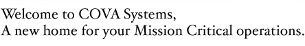

|
|

- Secure, Redundant Backup and Disaster
Recovery Solutions
The world is a different place from just a few years ago. Managers
prepared their companies for Y2K, and as part of the process began
to examine just how vulnerable their companies were to a catastrophic
loss, whether by weather event, fire, terrorism or accident. The
key to disaster recovery is the cost of downtime in your operation.
COVA has developed capabilities to fit a variety of scenarios,
whether you need simple tape backup or want to protect your data
from multiple remote sites.
Seven major highways including Interstate 20 converge at our location
in Abilene, Texas. Abilene Regional Airport accommodates commercial
and private aircraft. Abilene’s location is a strategic
distance from major targets for terrorism, and is out of the path
of hurricanes.
Let our sales engineers and system administrators sit down with
you and come up with the right solution for your company.
• Complete backup solutions
• Office space for recovery operations and your personnel
• State of the art IP-based telephone system, easily configurable
to
your needs.
• Active/Active and Active/Passive fallover sites
• Development of disaster recovery plans
• Remote backup
• Remote data center management
- Dedicated Server and Complex Hosting
All kinds of hosting are available at COVA Systems, from shared
to dedicated to load balancing among a number of servers. All
of our solutions have the advantage of our premium Tier 1 Internet
connections and constant monitoring around the clock. COVA has
expertise in Microsoft®, Linux and Solaris® server environments.
If you need server hardware, we can provide that, too. We’ll
make recommendations for the most reliable and affordable solution
for your Web or internal network needs.
All hosting benefits from the network monitoring that is constant
at
• Server administration and monitoring
• Intrusion detection
• Firewall administration
• Database administration
• Web and Email administration
• Load balancing
- Data Center Co-location
Moving your primary or backup data center to COVA will pay off
in many ways. In an access-controlled, monitored environment,
your data will be safer, while the scale of COVA’s data
center will bring efficiencies to the operation. You’ll
also benefit from a certified FM200 fire suppression system.
Use our scalability to achieve better security at a better cost.
Whether you need just one unit of space or have multiple racks
of equipment, we have the right combination of rack space and
premium bandwidth for you. Add Network Administration services
and let us engineer a Virtual Private Network for you to house
your data needs completely.
• Redundant UPS Power
• Diesel generator backup
• Redundant Liebert air conditioning
• Raised flooring
• CCTV security with recorded history
• Proximity card access
• FM 200 fire suppression
• 24/7 NOC monitoring
• Cisco Certified Network
• Backbone connectivity from multiple carriers
- Managed E-business and IT Services
COVA Systems is a Cisco Systems Premier Certified Partner. We
have deep experience in network security, network and server hardware/software
installation and configuration, monitoring and management, IP
telephony and Voice over IP.
We have years of experience in developing Web applications and
secure platforms for E-business. We’ll administer and monitor
your servers, firewalls and databases, and provide the hardware
you need, all with a single point of contact.
In addition, our range of services includes:
• VPN/Network administration
• Intrusion detection
• Load balancing
• Storage solutions
• Backup solutions
• Disaster recovery
• Remote backup
• Application development in a variety of operating systems
- Dedicated High-Speed Internet Connections
COVA is at a data crossroads, and utilizes multiple high-speed
Internet connections from multiple national networks. Complete
redundancy means we can offer you a connection with the highest
level of uptime. DSL to ATM, T1, T3, OC3, OC12 and OC48 connections
are available, and all on a self-healing SONET network.
We offer a variety of bandwidth pricing options, one to suit your
particular needs. Whether you need dedicated bandwidth or flexible,
burstable bandwidth on demand, call us for a quote with the most
current prices, or click here for our online
inquiry form.
Advanced wireless solutions to deliver any bandwidth you need
are also available. COVA has expertise in building private wireless
networks that cover a city, a county or more.
We offer nationwide dial-up access with local access in over 1,500
North American Cities.
|
|
|